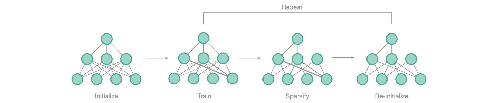

from fasterai.sparse.all import *Lottery Ticket Hypothesis
How to find winning tickets with fastai
The Lottery Ticket Hypothesis
The Lottery Ticket Hypothesis (Frankle & Carbin) looks for a subnetwork of a randomly-initialized network that, trained in isolation, matches the accuracy of the full network. The search procedure is:

- Initialize the neural network
- Train it to convergence
- Prune the smallest magnitude weights by creating a mask \(m\)
- Reinitialize the weights to their original value, i.e. at iteration \(0\)
- Repeat from step 2 until reaching the desired level of sparsity
SparsifyCallback covers steps 3 to 5 with four arguments: lth, rewind_epoch, reset_end and save_tickets. This page shows what each of them does to the weights. The four sections use different epoch budgets (20, 20, 10 and 8) and each is a single run, so their accuracies are not comparable with one another.
Get your data
path = untar_data(URLs.PETS)
files = get_image_files(path/"images")
def label_func(f): return f[0].isupper()
device = 'cuda:0' if torch.cuda.is_available() else 'cpu'
dls = ImageDataLoaders.from_name_func(path, files, label_func, item_tfms=Resize(64), device=device)The task is binary (cat/dog), and the networks below are trained from scratch, as the LTH procedure requires. Every accuracy on this page is read against this split’s size and majority-class rate.
def accuracy_report(learn, z=1.96):
"Validation accuracy as k/n, with its Wilson 95% interval"
n = len(learn.dls.valid_ds); k = round(learn.validate()[1]*n); p, d = k/n, 1 + z**2/n
c, h = (p + z**2/(2*n))/d, z*(p*(1-p)/n + z**2/(4*n**2))**0.5/d
print(f'{k}/{n} = {p:.2%}, Wilson 95% [{c-h:.2%}, {c+h:.2%}]')
return k
labels = [label_func(f.name) for f in dls.valid_ds.items]
print(f'validation set: n={len(labels)}, majority class {max(sum(labels), len(labels)-sum(labels))/len(labels):.2%}')validation set: n=1478, majority class 66.51%Every run below starts from the same random initialization.
learn = Learner(dls, resnet18(num_classes=2), metrics=accuracy)
initial_weights = deepcopy(learn.model.state_dict())lth
Pruning follows an iterative schedule with start_pct=0.25: over 20 epochs, nothing is removed for the first 5, then the schedule’s 3 steps take the network to its 50% target.
schedule = Schedule(sched_iterative, start_pct=0.25)lth=True resets the surviving weights to their saved values after each pruning step — step 4 of the procedure above.
sp_cb = SparsifyCallback(0.5, 'weight', 'local', large_final, schedule, lth=True)learn.fit(20, 1e-3, cbs=sp_cb)Sparsifying weight until a sparsity of 50.00%
Saving Weights at epoch 0| epoch | train_loss | valid_loss | accuracy | time |
|---|---|---|---|---|
| 0 | 0.596266 | 0.567692 | 0.698241 | 00:04 |
| 1 | 0.543938 | 0.573454 | 0.715156 | 00:04 |
| 2 | 0.518901 | 0.603374 | 0.669824 | 00:03 |
| 3 | 0.480113 | 0.535853 | 0.766576 | 00:04 |
| 4 | 0.447666 | 0.615270 | 0.668471 | 00:04 |
| 5 | 0.555433 | 0.594463 | 0.665088 | 00:03 |
| 6 | 0.507297 | 0.776507 | 0.696211 | 00:04 |
| 7 | 0.459506 | 0.519707 | 0.776725 | 00:04 |
| 8 | 0.416412 | 0.456590 | 0.776049 | 00:03 |
| 9 | 0.394612 | 0.421671 | 0.807848 | 00:04 |
| 10 | 0.485160 | 0.506875 | 0.746279 | 00:04 |
| 11 | 0.431435 | 0.435124 | 0.808525 | 00:04 |
| 12 | 0.384481 | 0.413494 | 0.809878 | 00:04 |
| 13 | 0.365834 | 0.453555 | 0.790257 | 00:04 |
| 14 | 0.314603 | 0.398241 | 0.816644 | 00:04 |
| 15 | 0.392020 | 0.488674 | 0.770636 | 00:04 |
| 16 | 0.347733 | 0.480754 | 0.767930 | 00:04 |
| 17 | 0.313012 | 0.380853 | 0.828823 | 00:04 |
| 18 | 0.286957 | 0.379999 | 0.830853 | 00:04 |
| 19 | 0.264188 | 0.393495 | 0.850474 | 00:05 |
Sparsity at the end of epoch 0: 0.00%
Sparsity at the end of epoch 1: 0.00%
Sparsity at the end of epoch 2: 0.00%
Sparsity at the end of epoch 3: 0.00%
Sparsity at the end of epoch 4: 0.00%
Resetting Weights to their epoch 0 values
Sparsity at the end of epoch 5: 16.67%
Sparsity at the end of epoch 6: 16.67%
Sparsity at the end of epoch 7: 16.67%
Sparsity at the end of epoch 8: 16.67%
Sparsity at the end of epoch 9: 16.67%
Resetting Weights to their epoch 0 values
Sparsity at the end of epoch 10: 33.33%
Sparsity at the end of epoch 11: 33.33%
Sparsity at the end of epoch 12: 33.33%
Sparsity at the end of epoch 13: 33.33%
Sparsity at the end of epoch 14: 33.33%
Resetting Weights to their epoch 0 values
Sparsity at the end of epoch 15: 50.00%
Sparsity at the end of epoch 16: 50.00%
Sparsity at the end of epoch 17: 50.00%
Sparsity at the end of epoch 18: 50.00%
Sparsity at the end of epoch 19: 50.00%
Final Sparsity: 50.00%
Sparsity Report:
--------------------------------------------------------------------------------
Layer Type Params Zeros Sparsity
--------------------------------------------------------------------------------
conv1 Conv2d 9,408 4,703 49.99%
layer1.0.conv1 Conv2d 36,864 18,431 50.00%
layer1.0.conv2 Conv2d 36,864 18,431 50.00%
layer1.1.conv1 Conv2d 36,864 18,431 50.00%
layer1.1.conv2 Conv2d 36,864 18,431 50.00%
layer2.0.conv1 Conv2d 73,728 36,863 50.00%
layer2.0.conv2 Conv2d 147,456 73,727 50.00%
layer2.0.downsample.0 Conv2d 8,192 4,095 49.99%
layer2.1.conv1 Conv2d 147,456 73,727 50.00%
layer2.1.conv2 Conv2d 147,456 73,727 50.00%
layer3.0.conv1 Conv2d 294,912 147,455 50.00%
layer3.0.conv2 Conv2d 589,824 294,911 50.00%
layer3.0.downsample.0 Conv2d 32,768 16,383 50.00%
layer3.1.conv1 Conv2d 589,824 294,911 50.00%
layer3.1.conv2 Conv2d 589,824 294,911 50.00%
layer4.0.conv1 Conv2d 1,179,648 589,823 50.00%
layer4.0.conv2 Conv2d 2,359,296 1,179,647 50.00%
layer4.0.downsample.0 Conv2d 131,072 65,535 50.00%
layer4.1.conv1 Conv2d 2,359,296 1,179,647 50.00%
layer4.1.conv2 Conv2d 2,359,296 1,179,647 50.00%
--------------------------------------------------------------------------------
Overall all 11,166,912 5,583,436 50.00%accuracy_report(learn);1257/1478 = 85.05%, Wilson 95% [83.14%, 86.77%]The log shows the mechanism: Saving Weights at epoch 0, then Resetting Weights to their epoch 0 values before each of the three pruning steps, which take the network to 16.67%, 33.33% and 50.00%.
rewind_epoch
For deeper networks, the authors propose rewinding to a slightly later iteration rather than to the initialization. rewind_epoch says which epoch’s weights to save and reset to.
learn = Learner(dls, resnet18(num_classes=2), metrics=accuracy)
learn.model.load_state_dict(initial_weights)<All keys matched successfully>sp_cb = SparsifyCallback(0.5, 'weight', 'local', large_final, schedule, lth=True, rewind_epoch=1)learn.fit(20, 1e-3, cbs=sp_cb)Sparsifying weight until a sparsity of 50.00%| epoch | train_loss | valid_loss | accuracy | time |
|---|---|---|---|---|
| 0 | 0.586931 | 0.563014 | 0.704330 | 00:04 |
| 1 | 0.556391 | 0.551396 | 0.708390 | 00:03 |
| 2 | 0.517984 | 0.517733 | 0.725304 | 00:04 |
| 3 | 0.478572 | 0.690975 | 0.721922 | 00:04 |
| 4 | 0.429751 | 0.493908 | 0.767930 | 00:05 |
| 5 | 0.491301 | 0.663512 | 0.575101 | 00:04 |
| 6 | 0.463573 | 0.908225 | 0.439783 | 00:04 |
| 7 | 0.426754 | 0.531834 | 0.701624 | 00:04 |
| 8 | 0.394181 | 0.466082 | 0.785521 | 00:03 |
| 9 | 0.353473 | 0.526482 | 0.776049 | 00:04 |
| 10 | 0.431623 | 0.582666 | 0.672530 | 00:04 |
| 11 | 0.381938 | 0.424426 | 0.807848 | 00:03 |
| 12 | 0.350716 | 0.420886 | 0.824763 | 00:04 |
| 13 | 0.312395 | 0.458487 | 0.787551 | 00:03 |
| 14 | 0.306417 | 0.354020 | 0.834235 | 00:03 |
| 15 | 0.362986 | 0.537298 | 0.750338 | 00:03 |
| 16 | 0.312587 | 0.532032 | 0.795670 | 00:03 |
| 17 | 0.277918 | 0.461688 | 0.804465 | 00:04 |
| 18 | 0.239933 | 0.346781 | 0.853180 | 00:04 |
| 19 | 0.224362 | 0.673507 | 0.755074 | 00:03 |
Sparsity at the end of epoch 0: 0.00%
Saving Weights at epoch 1
Sparsity at the end of epoch 1: 0.00%
Sparsity at the end of epoch 2: 0.00%
Sparsity at the end of epoch 3: 0.00%
Sparsity at the end of epoch 4: 0.00%
Resetting Weights to their epoch 1 values
Sparsity at the end of epoch 5: 16.67%
Sparsity at the end of epoch 6: 16.67%
Sparsity at the end of epoch 7: 16.67%
Sparsity at the end of epoch 8: 16.67%
Sparsity at the end of epoch 9: 16.67%
Resetting Weights to their epoch 1 values
Sparsity at the end of epoch 10: 33.33%
Sparsity at the end of epoch 11: 33.33%
Sparsity at the end of epoch 12: 33.33%
Sparsity at the end of epoch 13: 33.33%
Sparsity at the end of epoch 14: 33.33%
Resetting Weights to their epoch 1 values
Sparsity at the end of epoch 15: 50.00%
Sparsity at the end of epoch 16: 50.00%
Sparsity at the end of epoch 17: 50.00%
Sparsity at the end of epoch 18: 50.00%
Sparsity at the end of epoch 19: 50.00%
Final Sparsity: 50.00%
Sparsity Report:
--------------------------------------------------------------------------------
Layer Type Params Zeros Sparsity
--------------------------------------------------------------------------------
conv1 Conv2d 9,408 4,703 49.99%
layer1.0.conv1 Conv2d 36,864 18,431 50.00%
layer1.0.conv2 Conv2d 36,864 18,431 50.00%
layer1.1.conv1 Conv2d 36,864 18,431 50.00%
layer1.1.conv2 Conv2d 36,864 18,431 50.00%
layer2.0.conv1 Conv2d 73,728 36,863 50.00%
layer2.0.conv2 Conv2d 147,456 73,727 50.00%
layer2.0.downsample.0 Conv2d 8,192 4,095 49.99%
layer2.1.conv1 Conv2d 147,456 73,727 50.00%
layer2.1.conv2 Conv2d 147,456 73,727 50.00%
layer3.0.conv1 Conv2d 294,912 147,455 50.00%
layer3.0.conv2 Conv2d 589,824 294,911 50.00%
layer3.0.downsample.0 Conv2d 32,768 16,383 50.00%
layer3.1.conv1 Conv2d 589,824 294,911 50.00%
layer3.1.conv2 Conv2d 589,824 294,911 50.00%
layer4.0.conv1 Conv2d 1,179,648 589,823 50.00%
layer4.0.conv2 Conv2d 2,359,296 1,179,647 50.00%
layer4.0.downsample.0 Conv2d 131,072 65,535 50.00%
layer4.1.conv1 Conv2d 2,359,296 1,179,647 50.00%
layer4.1.conv2 Conv2d 2,359,296 1,179,647 50.00%
--------------------------------------------------------------------------------
Overall all 11,166,912 5,583,436 50.00%accuracy_report(learn);1116/1478 = 75.51%, Wilson 95% [73.25%, 77.63%]The log now reads Saving Weights at epoch 1 and Resetting Weights to their epoch 1 values; the sparsity steps are unchanged.
reset_end
reset_end=True restores the weights to their saved values at the end of the fit while keeping the mask. What you are left with is the untrained network with the mask found during training — the object Zhou et al. call a supermask.
learn = Learner(dls, resnet18(num_classes=2), metrics=accuracy)
learn.model.load_state_dict(initial_weights)<All keys matched successfully>sp_cb = SparsifyCallback(0.5, 'weight', 'local', large_final, schedule, lth=True, reset_end=True)learn.fit(10, 1e-3, cbs=sp_cb)Sparsifying weight until a sparsity of 50.00%
Saving Weights at epoch 0| epoch | train_loss | valid_loss | accuracy | time |
|---|---|---|---|---|
| 0 | 0.588391 | 0.563895 | 0.702300 | 00:04 |
| 1 | 0.556119 | 0.705092 | 0.674560 | 00:04 |
| 2 | 0.570143 | 0.600429 | 0.670501 | 00:04 |
| 3 | 0.551656 | 0.594924 | 0.709743 | 00:03 |
| 4 | 0.516997 | 0.509945 | 0.750338 | 00:03 |
| 5 | 0.531791 | 0.643235 | 0.604871 | 00:03 |
| 6 | 0.477593 | 0.520252 | 0.760487 | 00:03 |
| 7 | 0.486856 | 0.677995 | 0.574425 | 00:03 |
| 8 | 0.450588 | 0.451808 | 0.780108 | 00:03 |
| 9 | 0.404807 | 0.508317 | 0.766576 | 00:03 |
Sparsity at the end of epoch 0: 0.00%
Sparsity at the end of epoch 1: 0.00%
Resetting Weights to their epoch 0 values
Sparsity at the end of epoch 2: 16.67%
Sparsity at the end of epoch 3: 16.67%
Sparsity at the end of epoch 4: 16.67%
Resetting Weights to their epoch 0 values
Sparsity at the end of epoch 5: 33.33%
Sparsity at the end of epoch 6: 33.33%
Resetting Weights to their epoch 0 values
Sparsity at the end of epoch 7: 50.00%
Sparsity at the end of epoch 8: 50.00%
Sparsity at the end of epoch 9: 50.00%
Final Sparsity: 50.00%
Sparsity Report:
--------------------------------------------------------------------------------
Layer Type Params Zeros Sparsity
--------------------------------------------------------------------------------
conv1 Conv2d 9,408 4,703 49.99%
layer1.0.conv1 Conv2d 36,864 18,431 50.00%
layer1.0.conv2 Conv2d 36,864 18,431 50.00%
layer1.1.conv1 Conv2d 36,864 18,431 50.00%
layer1.1.conv2 Conv2d 36,864 18,431 50.00%
layer2.0.conv1 Conv2d 73,728 36,863 50.00%
layer2.0.conv2 Conv2d 147,456 73,727 50.00%
layer2.0.downsample.0 Conv2d 8,192 4,095 49.99%
layer2.1.conv1 Conv2d 147,456 73,727 50.00%
layer2.1.conv2 Conv2d 147,456 73,727 50.00%
layer3.0.conv1 Conv2d 294,912 147,455 50.00%
layer3.0.conv2 Conv2d 589,824 294,911 50.00%
layer3.0.downsample.0 Conv2d 32,768 16,383 50.00%
layer3.1.conv1 Conv2d 589,824 294,911 50.00%
layer3.1.conv2 Conv2d 589,824 294,911 50.00%
layer4.0.conv1 Conv2d 1,179,648 589,823 50.00%
layer4.0.conv2 Conv2d 2,359,296 1,179,647 50.00%
layer4.0.downsample.0 Conv2d 131,072 65,535 50.00%
layer4.1.conv1 Conv2d 2,359,296 1,179,647 50.00%
layer4.1.conv2 Conv2d 2,359,296 1,179,647 50.00%
--------------------------------------------------------------------------------
Overall all 11,166,912 5,583,436 50.00%accuracy_report(learn);495/1478 = 33.49%, Wilson 95% [31.13%, 35.94%]w = dict(learn.model.named_modules())['layer4.1.conv2'].weight.detach().cpu()
w0 = initial_weights['layer4.1.conv2.weight'].cpu()
print('kept weights identical to the initial ones:', torch.equal(w[w != 0], w0[w != 0]))
print('zeroed:', int((w == 0).sum()), 'of', w.numel())kept weights identical to the initial ones: True
zeroed: 1179647 of 2359296reset_end put the epoch-0 values back: in layer4.1.conv2, every surviving weight is identical to its initial value and the rest are zero.
The report still shows 50.00% overall, so the mask survived. This masked, untrained network scores exactly the complement of the majority-class rate printed above, which is what answering the same class for every image would give: the mask on its own buys nothing here.
save_tickets
save_tickets=True writes the model to disk at every pruning step and once more at the end of the fit. The file name carries the sparsity reached at that point.
learn = Learner(dls, resnet18(num_classes=2), metrics=accuracy)
learn.model.load_state_dict(initial_weights)
sp_cb = SparsifyCallback(0.5, 'weight', 'local', large_final, schedule, lth=True, save_tickets=True)
learn.fit(8, 1e-3, cbs=sp_cb)Sparsifying weight until a sparsity of 50.00%
Saving Weights at epoch 0| epoch | train_loss | valid_loss | accuracy | time |
|---|---|---|---|---|
| 0 | 0.592451 | 0.573541 | 0.720568 | 00:03 |
| 1 | 0.550956 | 0.561262 | 0.707713 | 00:03 |
| 2 | 0.567204 | 0.560436 | 0.711096 | 00:03 |
| 3 | 0.535383 | 0.556518 | 0.700947 | 00:03 |
| 4 | 0.544276 | 0.527442 | 0.720568 | 00:03 |
| 5 | 0.513027 | 0.537420 | 0.736130 | 00:03 |
| 6 | 0.507488 | 0.518000 | 0.744926 | 00:03 |
| 7 | 0.467243 | 0.558103 | 0.755074 | 00:04 |
Sparsity at the end of epoch 0: 0.00%
Sparsity at the end of epoch 1: 0.00%
Saving Intermediate Ticket
Resetting Weights to their epoch 0 values
Sparsity at the end of epoch 2: 16.67%
Sparsity at the end of epoch 3: 16.67%
Saving Intermediate Ticket
Resetting Weights to their epoch 0 values
Sparsity at the end of epoch 4: 33.33%
Sparsity at the end of epoch 5: 33.33%
Saving Intermediate Ticket
Resetting Weights to their epoch 0 values
Sparsity at the end of epoch 6: 50.00%
Sparsity at the end of epoch 7: 50.00%
Saving Final Ticket
Final Sparsity: 50.00%
Sparsity Report:
--------------------------------------------------------------------------------
Layer Type Params Zeros Sparsity
--------------------------------------------------------------------------------
conv1 Conv2d 9,408 4,703 49.99%
layer1.0.conv1 Conv2d 36,864 18,431 50.00%
layer1.0.conv2 Conv2d 36,864 18,431 50.00%
layer1.1.conv1 Conv2d 36,864 18,431 50.00%
layer1.1.conv2 Conv2d 36,864 18,431 50.00%
layer2.0.conv1 Conv2d 73,728 36,863 50.00%
layer2.0.conv2 Conv2d 147,456 73,727 50.00%
layer2.0.downsample.0 Conv2d 8,192 4,095 49.99%
layer2.1.conv1 Conv2d 147,456 73,727 50.00%
layer2.1.conv2 Conv2d 147,456 73,727 50.00%
layer3.0.conv1 Conv2d 294,912 147,455 50.00%
layer3.0.conv2 Conv2d 589,824 294,911 50.00%
layer3.0.downsample.0 Conv2d 32,768 16,383 50.00%
layer3.1.conv1 Conv2d 589,824 294,911 50.00%
layer3.1.conv2 Conv2d 589,824 294,911 50.00%
layer4.0.conv1 Conv2d 1,179,648 589,823 50.00%
layer4.0.conv2 Conv2d 2,359,296 1,179,647 50.00%
layer4.0.downsample.0 Conv2d 131,072 65,535 50.00%
layer4.1.conv1 Conv2d 2,359,296 1,179,647 50.00%
layer4.1.conv2 Conv2d 2,359,296 1,179,647 50.00%
--------------------------------------------------------------------------------
Overall all 11,166,912 5,583,436 50.00%sorted(p.name for p in Path('.').glob('winning_ticket_*.pth'))['winning_ticket_16.67.pth',
'winning_ticket_33.33.pth',
'winning_ticket_50.00.pth']The log adds a Saving Intermediate Ticket line at each pruning step and a Saving Final Ticket at the end, and three files are on disk, named after the sparsity each was taken at.
Summary
| Argument | What it does |
|---|---|
lth=True |
Resets the surviving weights to their saved values after each pruning step |
rewind_epoch=k |
Saves the weights at epoch k and rewinds to those instead of to epoch 0 |
reset_end=True |
Restores the saved weights at the end of the fit, keeping the mask |
save_tickets=True |
Writes winning_ticket_<sparsity>.pth at each pruning step and at the end |
See Also
- SparsifyCallback Tutorial - The callback without the LTH arguments
- Schedules Tutorial -
one_shot,iterativeandagpinside a fit - SparsifyCallback API - Every constructor argument
- Schedules API - Building and composing schedules